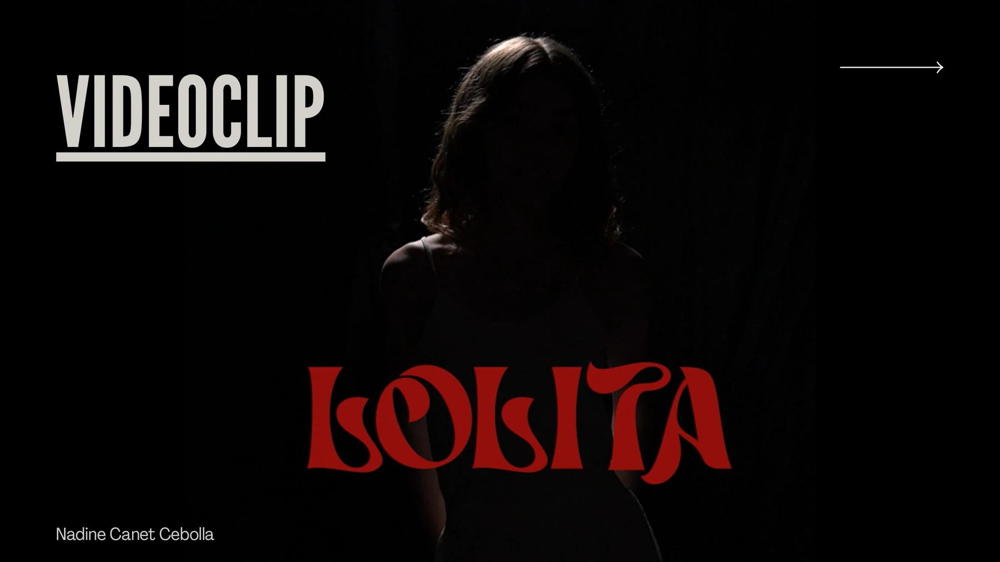

VIDEOCLIPPROYECTO AUDIOVISUAL
Lolita/ 03

Imagen, música
y narrativa.
Lolita es uno de los proyectos audiovisuales de mi portfolio. Esta selección visual presenta la imagen del videoclip.
- Formato
- Videoclip
¿Tienes una idea en mente?
Hablemos de tu proyecto